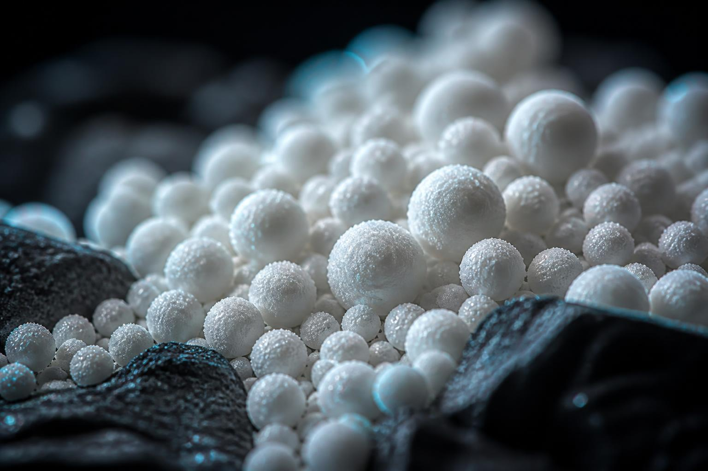

Bahamian Origin
Natural oolitic aragonite, sized to your process.
97.8% calcium carbonate from Bahamian deposits. Supplied for evaluation in glass, agriculture, water treatment, polymers and construction.
Application pathways
One natural mineral, many demanding applications.
AragoCor supports procurement, engineering and formulation teams evaluating aragonite across a range of industrial applications.


Why choose AragoCor
Material credibility, start to finish.
Our story
Credibility should come from evidence, not borrowed history.
AragoCor exists to help industrial buyers evaluate natural Bahamian oolitic aragonite through clear technical information, current documentation and application-specific review. Company and source details will be published only after they are verified.
Read Our StoryWhy aragonite is different
Same chemistry. Different crystal.
Aragonite and calcite share the formula CaCO₃, but their crystal systems and particle morphologies differ. Those differences can matter in a formulation, so performance should be confirmed under the intended process conditions.
Compare Aragonite & Calcite
Engineered by nature, applied by industry
From Bahamian deposits to your plant floor.
A practical source-to-supply path for evaluating, sizing and delivering natural oolitic aragonite.
Calcium carbonate precipitates around microscopic nuclei in warm Bahamian shallows.
Bahamian origin is identified; [CONFIRM: exact sourcing, harvest-partner and licensing relationship].
Drying, screening and classifying into precision particle distributions.
Specifications and available analytical data are reviewed for the requested material.
Packaging and freight options are planned around volume, destination and handling needs.
Technical evaluation
Representative data. Application-specific review.
Published values provide a starting point. Request current specifications, available characterization and lot-specific documentation for procurement decisions.
Knowledge Center